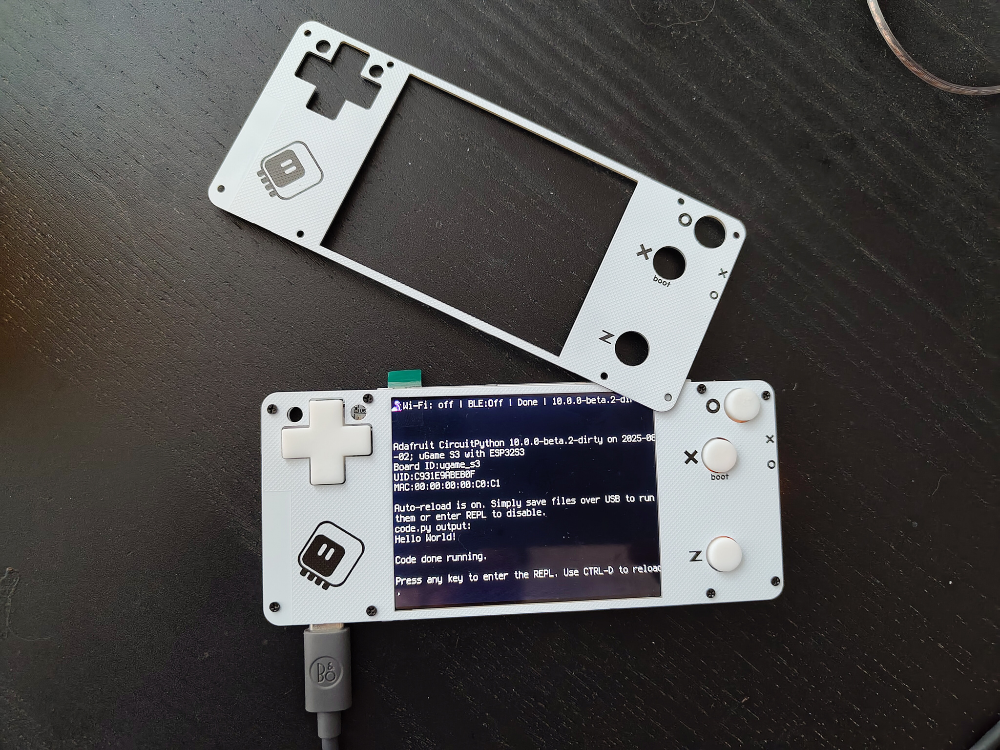
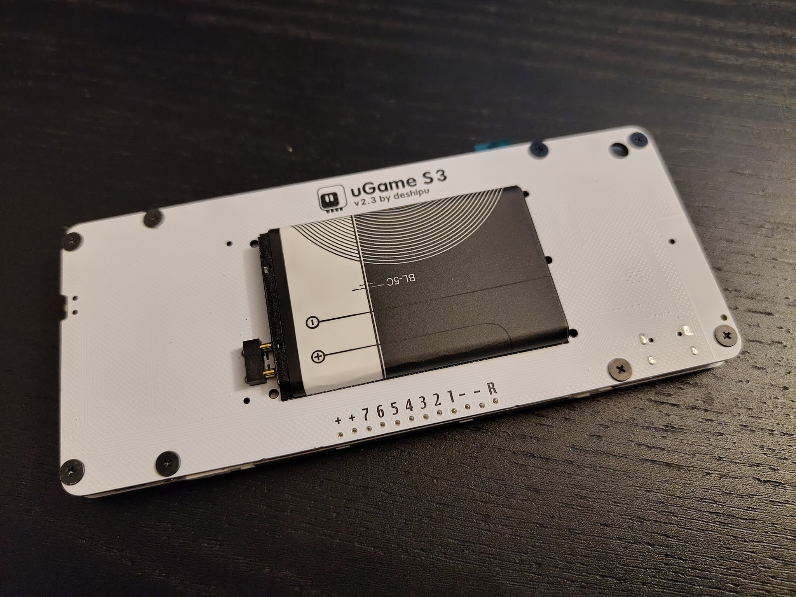

Front Plate and Firmware¶
Published on 2026-02-18 in µGame S3.
I have built couple more prototypes, and I have made some more experiments with the mechanical construction. I also decided that I’m pretty happy with the electronics, so I finalized the board definition and submitted it to CircuitPython. I still haven’t decided how to manufacture and distribute the consoles, but I will probably start with in-person workshops.
Front Plate¶
I really like electronic devices in transparent cases, and the laser-cut acrylic case that I originally used gives me that aesthetic at a very reasonable price, not to mention providing protection for the screen. But I decided to also try making the front plate non-transparent, and the easiest way to try this was to make it out of PCB, since I was ordering PCBs anyways.
I’m actually very happy with how this came out! The PCB is just 1mm thick, compared to 2mm acrylic, so the whole thing feels thinner and lighter. The display cutout is only for the active part of the screen, so the display no longer looks shifted to the side, and there is plenty of room for the button labels.
I mis-calculated the width of the display cutout, so the top and bottom margins are visually bigger than the left and right ones, but it’s fixed in the final design file, together with rounded corners for the cutout, and nicer logo area.
I also experimented with moving the spacers that are normally soldered to the main PCB to the front plate instead – since it’s a PCB now. This lets me move the screws to the back of the device.
I’m not sure if I will go with this, since it requires the front plate to also be soldered. I might do that if I end up soldering them myself by hand, but if I go for pick and place at a fab, I will probably keep the spacers on the main PCB to save on the assembly costs. In any case, I have the footprints for the spacers now both on the main PCB and on the front plate, so either works.
As for retaining the battery, I have decided to simply use a black tape on the back, at least for now. I might come up with some kind of 3D-printed clip later on, as I experiment more.
More Games¶
I really want to focus now on making more games for the CircuitPython in general and for my Stage engine in particular. I have started on a new one, that is going to be a simple roguelike game – I always wanted to write something like that for CircuitPython.